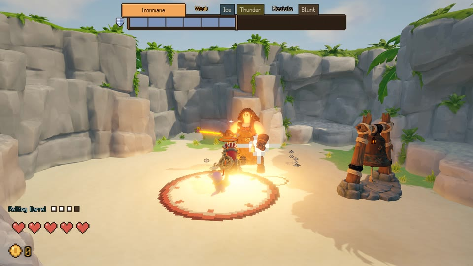
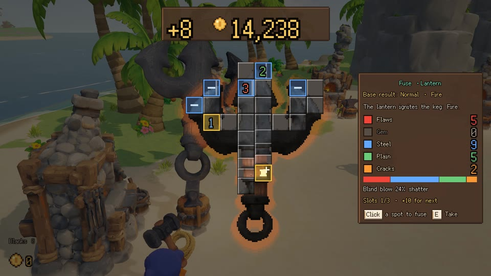
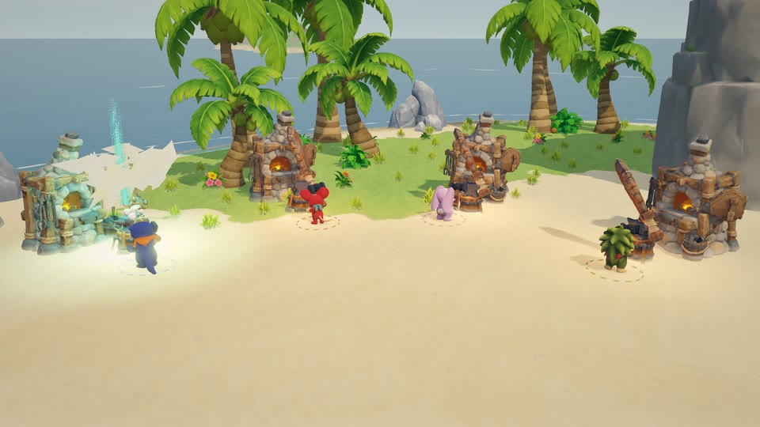
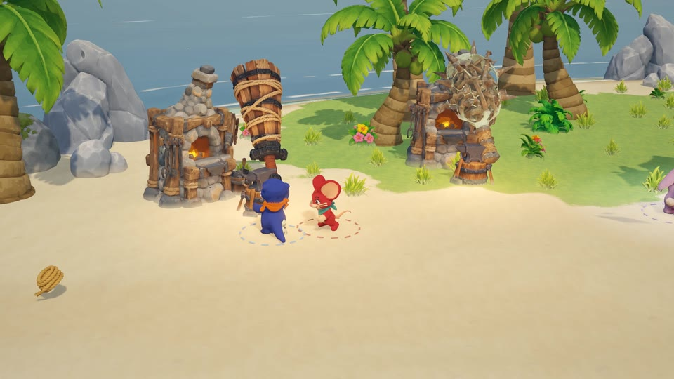
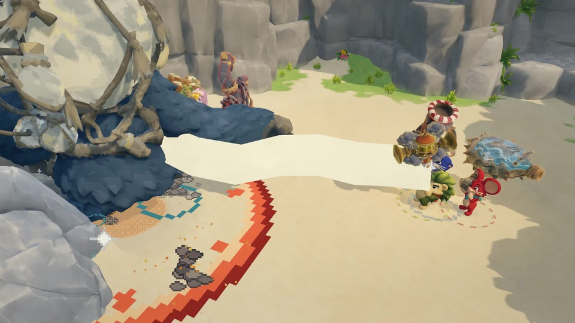
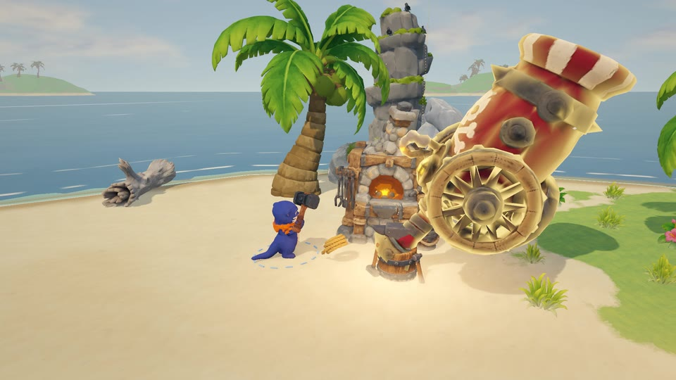
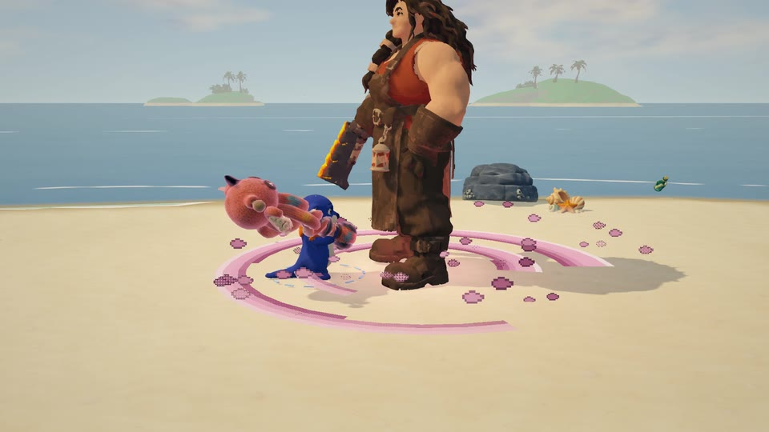
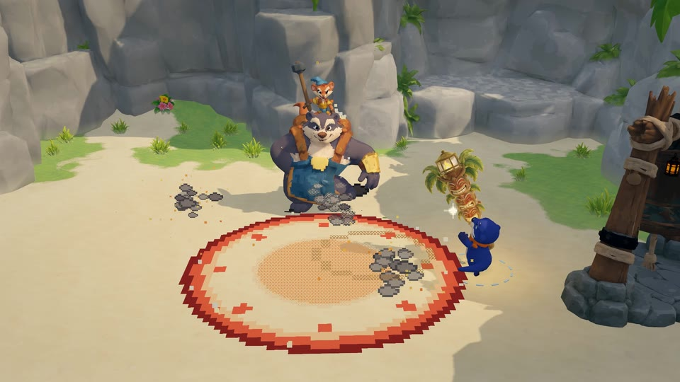
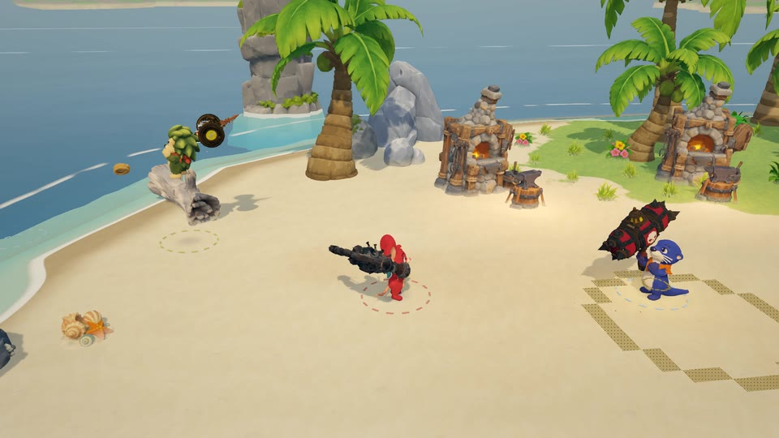
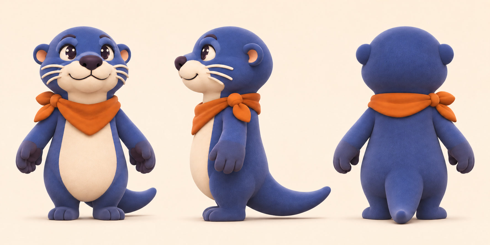

Scrap Forge锻造之王Scrap Forge
Forge a blade from beach junk, then fight a giant blacksmith, or the friend who ruined your recipe.
把海滩上的破烂打成一把剑，去挑战巨匠，或者找刚才往你炉子里乱扔东西的朋友算账。
1–4 players online · Solo, co-op and Versus · English and Simplified Chinese
1–4 人联机 · 单人、合作与对战 · 简体中文与英文
This page is a rehearsal of the game's Steam page: the trailer, the screenshots, the description and the disclosures a store asks for, laid out before there is a store to put them in. Below that is the long version of how the game is being made. Nothing here is for sale yet.
这一页是游戏 Steam 页面的预演：预告片、截图、介绍，还有商店要求写清楚的那些说明，在真正上架之前先排一遍。再往下是这款游戏是怎么做出来的。现在还没有任何东西在卖。
Recorded inside the game at 1080p, sixty frames a second. The sound effects are what the game played during each take, and the music is the game's own battle theme, laid under the cut. The scenes between players are staged: scripted seats play the four animals the way friends would. The edit added the cuts, a closer crop on three of those scenes, and three lines of words.
全部在游戏里录制，1080p、每秒 60 帧。音效是录制时游戏自己发出的，音乐是游戏里的战斗曲，剪辑时铺在下面。玩家之间打闹的几段是编排出来的：四只动物由脚本操控，照着朋友之间会怎么玩来演。后期只做了剪辑，把其中三段画面裁近了一些，加了三行字。












You are an animal blacksmith about knee high, on a beach full of questionable materials. Pick something up, hammer it into a blade, and take that blade into a duel against a smith many times your size. Bring friends to the fight, or give them a reason to fight you.
你是一只只到别人膝盖高的动物铁匠，海滩上堆满了来路不明的材料。捡一样起来，敲成一把剑，再拿着它去跟比你大好几圈的铁匠比武。可以叫上朋友一起打，也可以让朋友有理由来打你。
Make a weapon out of this?
这也能打成武器？
Six kinds of things lie around each map; on the beach they are barrels, coconuts, scrap, rope, lanterns and bottles. The first one you fuse decides what the sword grows into. The second turns it into one of twenty-one pair weapons, which changes shape twice more as its grade climbs. A barrel and a lantern make a powder keg, and a few grades later a ship's cannon.
每张地图上散着六种东西，海滩上是木桶、椰子、废铁、缆绳、灯笼和漂流瓶。第一件熔进去，决定这把剑往哪个方向长；第二件让它变成二十一种组合武器里的一种，等级上去之后还会再变两次形。木桶加灯笼是火药桶，再敲高几级，就成了一门老舰炮。
Risk one more strike
再敲一锤？
On the anvil the sword becomes a board of hidden strike points laid over its own outline. An opened point tells you how many flaws sit next to it, so you read the blade the way you read a minesweeper board. Clear every safe point and the grade goes up. On Standard, a blow on a flaw breaks the sword.
剑放上铁砧，剑身的轮廓上就铺开一片盖着的敲击点。敲开一点，它会告诉你旁边有几处暗伤，所以要像读扫雷那样读这把剑。把安全的点全敲开，等级加一。标准难度下敲中暗伤，剑就碎了。
Fight with what you forged
打出什么，就拿什么上场
Every smith ends in a duel, and the only weapon you have is the one you made. There are eight rival smiths, four in a run, and then the Forge King. Their blows are marked on the ground before they land, and they do not go easier on you for being small.
每位铁匠最后都要比一场武，你手里只有自己打的那一把。铁匠一共八位，一局会遇到四位，最后是锻造之王。他们出招之前地上会有预警，但不会因为你个子小就手下留情。
Bring the crew
叫上朋友
Up to four animals share a run online: an otter, a mouse, a rabbit and a hedgehog. You forge side by side, and a teammate can catch a sword that is about to crack. In the duel a fallen paw is pulled back up by whoever reaches it first, and the giant has more health for every extra paw.
最多四只动物联机跑同一局：水獭、老鼠、兔子、刺猬。大家并排打铁，队友能接住一把快要裂开的剑。比武时有人倒下，谁先赶到谁把它拉起来；每多一只爪子，巨匠的血也厚一截。
Mess with their masterpiece
给别人的杰作添点乱
Versus gives everyone the same blanks and one clock. While the others hammer you can knock them off the anvil, throw a coconut at their head, or drop a piece of scrap into their sword so that it turns into something they never planned. Nobody can take your sword away. They can only ruin your afternoon.
对战模式里，每个人拿到一样的剑坯，一起倒计时。别人在敲的时候，你可以把他撞下铁砧，往他头上扔椰子，或者往他的剑里塞一块废铁，让它变成他压根没打算做的东西。没有人能抢走你的剑，他们只能毁掉你的好心情。
Then settle it
然后算账
When the bell rings everyone fights with whatever came off their anvil. Barrels fall out of the sky, lanterns start fires, and a storm closes the round. Places go by knock-outs, then damage, and the last round counts double. Empty seats can be filled by computer smiths.
钟一响，所有人拿着刚打出来的东西开打。天上会掉木桶，灯笼会着火，最后一场雷暴收尾。名次先看击倒，再看伤害，最后一轮算双倍。空着的座位可以让电脑铁匠补上。
Details and disclosures
规格与说明
What is in it
内容
- 231 weapon forms231 种武器形态120 on the beach and 111 on Cloudtop, each designed with a move of its own.海滩 120 种，云顶 111 种，每一种都有自己的招式。
- Fusion chains连续熔合A sword holds up to five things. From the third on, what comes out is a new weapon with a name of its own.一把剑最多熔进五件东西。从第三件起，出来的是一把有自己名字的新武器。
- Eight smiths and a King八位铁匠和一位王Seven moves each, three of them kept for below half health. Their weak points are drawn again every run.每位七招，其中三招留到半血以下才用。他们怕什么，每一局重新抽。
- Two maps两张地图A beach cargo yard, and Cloudtop above a sea of cloud, with its own six things and its own weapons.海滩货栈，和云海之上的云顶。云顶有自己的六种材料和自己的武器。
- Co-op for up to four最多四人合作Online rooms on a local network or over the internet. One player a machine; there is no same-screen play.局域网或互联网房间。一台电脑一位玩家，没有同屏。
- Versus对战One to seven rounds of forging, sabotage and a brawl, with up to three computer smiths at three strengths.一到七轮，每轮先锻造、捣乱，再混战；最多三位电脑铁匠，强度分三档。
- Items and Heat物品与炉温86 items that bend the rules of a run, and ten levels of Heat after the first clear, each keeping every rule below it.86 件能改变一局规则的物品；首次通关后有十级炉温，每一级都保留下面所有的规则。
- Endless forge and boss rush无尽锻造与连战After a clear: a forge with no days and no broken swords, and the smiths one after another with their health rising.通关后开放：没有天数、不会碎剑的锻炉，以及一位接一位、血量越来越厚的铁匠。
The game
游戏
- Title名称
- Scrap Forge · 锻造之王
- Status状态
- In development; no release date and no store page yet开发中，尚无发售日期和商店页面
- Players人数
- 1–4, online1–4 人，联机
- Languages语言
- English and Simplified Chinese, interface and text. No spoken dialogue.简体中文与英文的界面和文字。没有语音对白。
- Controls操作
- Keyboard and mouse with 14 rebindable actions; gamepad (tested on a DualSense)键鼠，14 个动作可改键；手柄（在 DualSense 上测过）
- Difficulty难度
- Standard, or Peaceful, where a flaw costs a grade and the sword stays标准；或和平：敲中暗伤只掉一级，剑不会碎
- Engine引擎
- Unity 6
- Made by制作
- Luke Wang
System requirements
系统需求
- System系统
- Windows 10 or 11, 64-bitWindows 10 / 11，64 位
- Minimum最低配置
- Not measured yet. The low picture level renders at 75% scale and is meant for integrated graphics, but no such machine has run it.还没有实测。低画质按 75% 分辨率渲染，是为集成显卡准备的，但还没有在这样的机器上跑过。
- Measured on实测机器
- Core i7-14700KF, RTX 4070 Ti SUPER, 1080p: 439 to 606 frames a second across the three picture levelsCore i7-14700KF、RTX 4070 Ti SUPER、1080p：三档画质下每秒 439 到 606 帧
- Storage存储空间
- About 1.4 GB, of which 0.5 GB is the language model约 1.4 GB，其中 0.5 GB 是语言模型
- Network网络
- Only for playing with others. The language model runs on your own processor and never connects.只有联机才需要。语言模型跑在你自己的处理器上，不联网。
- macOS
- Builds exist and have never been run on a Mac. Not listed.有构建，但从没在真正的 Mac 上跑过，所以不列为支持。
AI-generated content
AI 生成内容说明
Made with AI before you play. The 3D models (scenery, weapons, the four animals and the rival smiths) begin as generated concept pictures and are turned into meshes with Tripo; scripts then weld them, cut them down, redo their textures and rig them. Item icons, achievement icons, the app icon and the story pictures are generated images cut down to one small palette. Most sound effects and the one music loop are generated with ElevenLabs and processed by script. The code, the in-game text and both languages of it were written by AI coding agents (Claude Code and Codex) working to my direction.
你玩之前由 AI 参与制作的部分。3D 模型（场景、武器、四只动物和各位铁匠）先生成概念图，再用 Tripo 转成网格，然后由脚本焊缝、减面、重做贴图、绑骨。物品图标、成就图标、应用图标和剧情插画是生成的图片，再统一压到同一套小色板上。大部分音效和唯一的一段音乐由 ElevenLabs 生成，再经脚本处理。代码、游戏内文字和中英两种语言的文本，都由 AI 编程代理（Claude Code 和 Codex）按我的要求写成。
Made by AI while you play. When a sword is fused from three or more things, a small language model (Qwen2.5-0.5B, run by llama.cpp on your own processor, with no network) gives it a name and picks two keywords for it from a fixed list. The answer has to fit a schema: a name of three to seven Chinese characters, an English name of two or three plain capitalised words, and choices from lists the game supplies. Anything else is thrown away and a name made by rule is used instead. The model cannot write free text into the game, cannot set a number and cannot invent an object.
你玩的时候由 AI 生成的部分。当一把剑熔进三件以上的东西时，一个很小的语言模型（Qwen2.5-0.5B，由 llama.cpp 跑在你自己的处理器上，不联网）给它起名，并从固定的词表里挑两个关键词。回答必须符合规定的格式：三到七个汉字的中文名，两到三个首字母大写的普通英文词，其余全部从游戏给出的列表里选。不合格的回答会被丢掉，换成按规则拼出来的名字。模型不能往游戏里写任意文字，不能设定任何数值，也不能凭空造出物件。
Not AI. The forging sounds are synthesised by code from the size of the sword on the anvil. Attack effects and the interface are drawn by code. Every animation is keyed by script; there is no motion capture and no generated animation. The rules, the numbers and the 231 weapon designs are written out by hand in tables.
不是 AI 的部分。打铁的声音是代码按铁砧上那把剑的大小实时合成的。攻击特效和界面由代码绘制。所有动画都是脚本逐帧打的关键帧，没有动作捕捉，也没有生成动画。规则、数值和 231 种武器的设计，是一条一条写在表里的。
One person directing, and a lot of machines.
一个人拿主意，很多机器干活。
The first map of Scrap Forge was started on 6 November 2026. I direct the game; I do not write its code. What follows is the disclosure above at full length: who does what, where a model runs inside the game, and what I did about everything looking generated.
《锻造之王》的第一张地图是 2026 年 11 月 6 日开工的。我负责拿主意，代码不是我写的。下面是上面那段说明的完整版：谁在做什么，游戏里哪个地方跑着一个模型，以及“看起来全是生成的”这件事我是怎么处理的。
Who does what
谁在做什么
The code is written by coding agents, Claude Code and Codex, working in the same Unity project: 344 C# files so far. I play each build and say what is wrong with it, usually in a sentence or two, and choose when they bring me options. The agents also wrote the Blender scripts that clean and rig the models, the bots that play the game so its numbers can be tuned, and the checks every build has to pass.
代码由编程代理来写，Claude Code 和 Codex 在同一个 Unity 工程里干活，到现在是 344 个 C# 文件。我玩每一个版本，说哪里不对，通常就一两句话；它们拿出几个方案的时候，由我来挑。清理模型和绑骨用的 Blender 脚本、替我试玩好调数值的机器人、每次构建都必须通过的检查，也都是它们写的。
The models come from Tripo. Each one starts as a concept picture, always in three views (a rule I made after a batch built from single views came out badly), becomes a mesh, and then goes through scripts that weld its seams, cut it to a face budget and repaint its texture. Characters are rigged and their moves keyed by script as well.
模型来自 Tripo。每个模型先有概念图，而且一定是三视图（有一批只用单张图生成的模型效果很差，之后我定了这条规矩），再变成网格，然后交给脚本焊缝、按面数预算减面、重画贴图。角色的绑骨和动作也是脚本做的。
The forging sounds are the one place I threw the generated version out entirely. The first ones sounded silly and had no weight, so the hammer, the hiss and the ring are now computed while you play.
打铁的声音是我唯一把生成版本整个扔掉的地方。最早那批听起来很蠢，没有力量感，所以现在锤声、嘶声和余响都是你玩的时候现算出来的。

A small model at the anvil
铁砧边上的小模型
When a sword takes a third, fourth or fifth thing, it stops being one of the 231 weapons that were designed in advance. It needs a name and a look. A language model of half a billion parameters, Qwen2.5-0.5B, gives it both, on the player's own processor.
一把剑熔进第三、第四、第五件东西之后，就不再是事先设计好的那 231 种武器之一了。它需要一个名字，也需要一个样子。这两样由一个只有五亿参数的语言模型 Qwen2.5-0.5B 来给，跑在玩家自己的处理器上。
Each fusion is one question: the weapon's present name, the thing just added, and short lists to choose from. The answer names the weapon in both languages, picks two keywords and says where the new thing sits. The keywords are things the game can draw: longer, bent, rusted, frosted, hung with shells, shedding sparks. Each also carries fixed numbers, so a serrated edge always means 15% more damage. The model chooses and names. It never sets a number, and it cannot ask for anything the game cannot show.
每次熔合就是问它一个问题：武器现在叫什么，刚加进去的是什么，再给几张短短的候选表。它的回答要给出中英两个名字，挑两个关键词，再说新东西装在武器的哪个位置。关键词都是游戏画得出来的：加长、弯曲、生锈、结霜、挂贝壳、冒火花。每个词还带着固定的数值，比如“锯齿”永远是伤害加 15%。模型负责挑和起名，它从不决定数值，也没法要一样游戏画不出来的东西。
A model this small is not dependable, and I would rather say so. Over replays of 756 questions, between 58 and 70 names in a hundred pass the checks; the rest are replaced by a name built by rule. It tends to take the first option it is offered, so the lists are turned for every roll. Its English is sometimes odd. All of these came out of the game:
这么小的模型并不可靠，这一点我宁愿直说。拿 756 个问题反复重放，每一百个名字里有 58 到 70 个能通过检查，其余的换成按规则拼出来的名字。它总爱选列表里的第一项，所以每次都要把列表转一转。它的英文有时很怪。下面这些都是游戏里真实出现过的：
- scrap + bottle, then a lantern废铁 + 漂流瓶，再加灯笼灯笼钉船 · Hammered Bottle Ship
- the same recipe, on camera for the loop below同一个配方，为下面那段循环录的这一次灯笼船钉 · Bottle Nail Ship
- barrel + lantern, then a coconut, then rope木桶 + 灯笼，再加椰子、缆绳缠绳椰子火药桶 · Corded Coconut Firecracker
- the same recipe, rolled again同一个配方，再来一次波浪椰香火药桶 · Wave Coco Powder
- and again再来一次缠椰子火药桶 · Cocoa Powder Bottle
- scrap + rope, then a lantern废铁 + 缆绳，再加灯笼发光捆废铁 · Flame Wrapped Scrap
- rope + lantern, then a bottle缆绳 + 灯笼，再加漂流瓶贝壳灯绳 · Sea Shell Lamp
- coconut + rope, then scrap twice (keyword: rusted)椰子 + 缆绳，再加两次废铁（关键词：生锈）生锈椰棕绳 · Sparkle Coconut Rope
- Cloudtop: old pick + yak wool, then a gourd云顶：旧矿镐 + 牦牛毛团，再加雪水葫芦雪绒花葫芦绳镐 · Snowflake Glued Climbing
- Cloudtop: two lumps of sulphur, then an old pick云顶：两块硫磺，再加旧矿镐碎石硫磺 · Squelched Sulphur Lumps
On the development PC the model starts in one to four seconds and answers in about half a second. I have no numbers for slower machines yet. In a room only the host asks it, and the finished sword travels to everyone else.
在开发用的电脑上，模型一到四秒启动，大约半秒给出回答。更慢的机器上是什么样，我还没有数据。联机时只有房主去问它，打好的剑再发给其他人。
Slightly pixel
带一点像素
Generated models arrive with painted textures that look generated: busy, soft, and each a little different from the next. The first island I put together from them looked crude and cluttered at once. What people call the AI look is, I think, less about tool marks than about not being able to see that anyone made a decision. So the decision had to be visible, and it had to be the same one everywhere.
生成的模型带着一看就是生成的贴图：又碎又糊，而且每一个都和旁边的不太一样。我用它们拼出来的第一座岛，又简陋又杂乱。大家说的“AI 味”，我觉得关键不在工具留下的痕迹，而在于看不出有人做过决定。所以这个决定得让人看得见，而且到处都得是同一个决定。
The rule came from the hearth, which I liked as soon as I saw it. Scenery textures are baked down, smoothed, cut to about twenty flat colours and sampled without filtering, so every rock, crate and palm shows the same small square of paint. Weapons keep their painting, because they are what you look at. The rival smiths are redrawn on one pixel grid per body. Summons are built from cubes about three centimetres across, more pixel than anything else because they are moves and not things. Attack effects are pixel sprites drawn by code, the interface is wood and paper drawn as eight-by-eight textures, and the animals wear twenty layers of fur over a coat sampled the same blunt way. The picture itself is not pixelated. Only the materials are.
这条规矩是从灶台来的，我第一眼看到它就喜欢。场景的贴图先烘焙、再抹平、压到大约二十种平涂的颜色，采样时不做过滤，于是每块石头、每个箱子、每棵棕榈树上，都是同样大小的一小块颜色。武器保留原来的画法，因为它是你一直盯着看的东西。各位铁匠的贴图按身体大小各自重画在一张像素格上。召唤物用大约三厘米见方的小方块搭成，比别的都更像素，因为它们是招式，不是物件。攻击特效是代码画的像素图，界面是用 8×8 的小贴图画出来的木头和纸，动物身上的毛是二十层壳，底下的皮毛用的是同样不过滤的采样。画面本身并没有像素化，像素化的只有材质。


Checks, proofs and bots
检查、取证和机器人
Nobody on this project is a tester, so the game tests itself. Before a build is made, its rules are played in a simulation with no picture and the results compared with numbers: twenty groups of checks, 875 of them for the contract rules alone at the last count. Fifty-six command-line flags make the finished game play one part of itself and write screenshots. Bots of several skill levels fight every smith and play whole runs, so that the numbers are roughly right before I sit down.
这个项目里没有测试员，所以游戏自己测自己。每次构建之前，规则先在一个没有画面的模拟里跑一遍，结果和数字逐条对照：一共二十组检查，光是合同规则这一组，最近一次就有 875 条。另有五十六个命令行开关，能让打好的游戏自己把某一段玩一遍并截图。几种水平的机器人会去挑战每一位铁匠、跑完整局，这样在我坐下来玩之前，数值已经大致靠谱。
The trailer on this page was recorded the same way. A recorder and a small director were added to a private copy of the game, and the director plays the seats.
这一页的预告片也是这样录的：在游戏的一份私有副本里加了一个录像器和一个小导演，由导演来操控各个座位。
What is not there yet
还没做到的
- There is no Steam app yet. Lobbies, 42 achievements and cloud saves are written, and have only been tried on Valve's test app.还没有 Steam 应用。大厅、42 个成就和云存档都写好了，但只在 Valve 的测试应用上试过。
- Playing over Steam has not been tried between two real accounts.通过 Steam 联机，还没有在两个真实账号之间试过。
- Bots are not people. Co-op, Versus, the King and the newest weapons have had little or no play by humans.机器人不是人。合作、对战、王，还有最新的那批武器，几乎没有真人玩过。
- Nothing has been measured on a slow computer, and nothing has run on a Mac.慢的电脑上没有任何实测数据，Mac 上一次都没跑过。
- I have not yet sat down and approved the sound by ear.声音我还没有坐下来一条一条听过、点过头。
- Cloudtop still borrows the beach's ambience and footsteps.云顶的环境声和脚步声还是借海滩的。